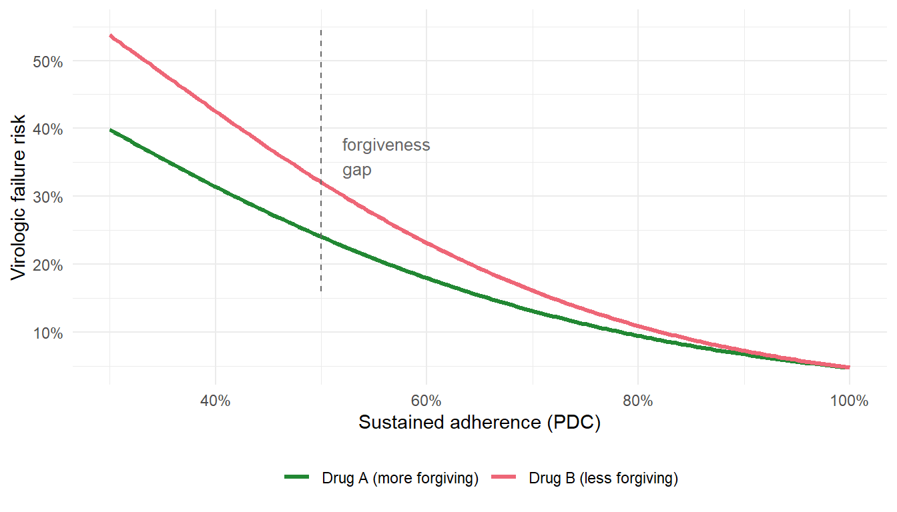
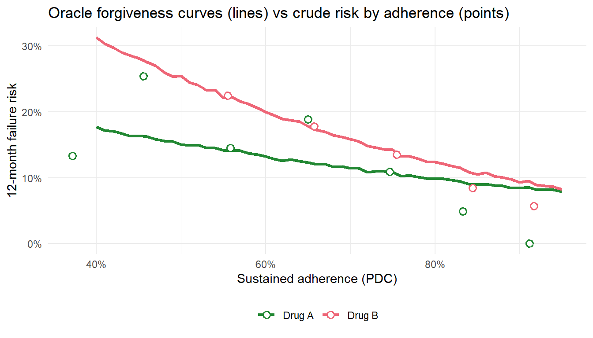

From adherence thresholds to intervention-defined forgiveness curves
Estimated reading time: 55 minutes
16 What this chapter is about
Earlier chapters introduced longitudinal TMLE for static interventions (“always maintain high adherence”) and LMTP (longitudinal modified treatment policy) for modified treatment policies. Here we bring those tools to bear on a clinically important question: how do two antiretroviral drugs compare once we account for realistic adherence patterns? The focus is the adherence- and forgiveness-specific shift methods. For the full end-to-end LMTP workflow on a dynamic treatment rule, from question to estimate, see Chapter 18.
The key concept is regimen forgiveness. A drug is forgiving if patients can miss some doses without a large increase in treatment failure. A flat adherence-response curve means a forgiving drug; a steep curve means an unforgiving one. Forgiveness is a causal quantity rather than an observable property of the data, because the adherence-response relationship is confounded by time-varying health status.
Our data are a simulated two-drug HIV cohort built to capture the features that make the adherence problem hard: treatment-confounder feedback between adherence and health, differential forgiveness across drugs, and the positivity strain that arises when targeting extreme adherence levels. The simulation is calibrated to real pharmacoepidemiologic settings and measures adherence as continuous proportion of days covered (PDC).
Figure 16.1 previews the quantity we are after. A forgiveness curve plots the counterfactual risk of virologic failure against the adherence level a patient sustains, one curve per drug. The vertical distance between the two curves is the forgiveness gap: how much more a missed-dose pattern costs on the less forgiving regimen. The curve is a causal object. It is the risk we would see if adherence were set to each level, which is not the risk we observe among patients who happen to adhere at that level. Those two can diverge sharply, and most of this chapter is about why they do and how to estimate the causal version.
Show code
library(ggplot2)adh <-seq(0.30, 1, length.out =150)data.frame(adherence =rep(adh, 2),risk =c(plogis(-3+4.5* (1- adh)),plogis(-3+4.5* (1- adh) -0.8* (1- adh))),Drug =rep(c("Drug B (less forgiving)", "Drug A (more forgiving)"), each =150)) |>ggplot(aes(adherence, risk, color = Drug)) +geom_line(linewidth =1.2) +annotate("segment", x =0.5, xend =0.5, y =0.16, yend =0.55,linetype ="dashed", color ="grey40") +annotate("text", x =0.52, y =0.36, label ="forgiveness\ngap",hjust =0, size =3.4, color ="grey40") +scale_x_continuous(labels = scales::percent) +scale_y_continuous(labels = scales::percent) +scale_color_manual(values =c("Drug B (less forgiving)"="#EE6677","Drug A (more forgiving)"="#228833")) +labs(x ="Sustained adherence (PDC)", y ="Virologic failure risk", color =NULL) +theme_minimal() +theme(legend.position ="bottom")

Figure 16.1: An illustrative forgiveness curve. Counterfactual failure risk rises as sustained adherence falls, and it rises faster for the less forgiving regimen. The vertical distance is the forgiveness gap. This is the causal quantity the chapter estimates; the curve here is a stylized illustration, not yet an estimate from data.
17 The clinical question
Consider two antiretroviral regimens for HIV treatment:
Drug A (e.g., a long-acting formulation): pharmacologically forgiving, so occasional missed doses have a smaller impact on viral suppression.
Drug B (e.g., a short half-life oral regimen): less forgiving, so missed doses lead to faster viral rebound.
In practice both drugs are prescribed and adherence varies. The adherence distributions may differ across drugs, since one may be easier to take consistently, and the clinical cost of low adherence differs too, since one drug is more forgiving. The causal question is this: how much of the observed outcome difference between drugs is due to adherence patterns versus pharmacological forgiveness?
This question requires separating three components:
Adherence distribution: Do Drug A and Drug B patients adhere at different rates?
Forgiveness: At any given adherence level, does one drug produce better outcomes than the other?
Adherence-mediated effect: How much of the total drug difference operates through the adherence pathway?
Each component calls for longitudinal causal methods, because adherence and health co-evolve over time (Petersen et al. 2006).
18 Why this needs a causal method
Adherence is measured after treatment starts, changes over time, and sits in a feedback loop with health (Rosenblum et al. 2009). Worse health lowers adherence through side effects and complications. Lower adherence worsens virologic control. Worse control feeds back into health, which shapes the next period’s adherence. So the variable that confounds the adherence-to-failure relationship, current health status \(L_t\), is at the same time a consequence of past adherence (Figure 18.1).
flowchart LR
W0["W0<br/>baseline severity"] --> A0["A0<br/>drug"]
W0 --> L1["L1<br/>health"]
A0 --> Y["Y<br/>failure"]
A0 --> P1["PDC1<br/>adherence"]
L1 --> P1
P1 --> Y
L1 --> Y
P1 --> L2["L2<br/>health"]
W0 --> L2
L2 --> P2["PDC2<br/>adherence"]
A0 --> P2
P2 --> Y
L2 --> Y
P2 --> L3["L3<br/>health"]
W0 --> L3
L3 --> P3["PDC3<br/>adherence"]
A0 --> P3
P3 --> Y
L3 --> Y
Figure 18.1: Three blocks of the adherence process (K = 3). Baseline severity W0 channels the drug choice A0 (confounding by indication, the arrow W0 to A0). Health status L at each block confounds the adherence-to-failure relationship and is itself moved by prior adherence (the feedback arrows PDC1 to L2 and PDC2 to L3); this is treatment-confounder feedback. The drug A0 also lowers adherence at every block (the arrows A0 to PDC1, PDC2, and PDC3). The drug’s forgiveness, its modification of how adherence maps to failure, is not a drawable edge but a feature of the structural failure model. A regression that conditions on L removes the confounding but also blocks the pathway through which past adherence acts; a regression that omits L leaves the confounding in place.
Here is the dilemma that defeats ordinary regression. Condition on observed adherence and you adjust for the health-status confounding, but you also block the adherence effect you want to measure, because that effect runs through health. Leave health out of the model and the confounding stays in place. No single regression can do both. This is the treatment-confounder-feedback setting of Chapter 12, and it is why estimating a forgiveness curve needs the g-methods developed there.
19 The data-generating process
The simulation generates longitudinal data in 90-day blocks (K = 3 blocks). The DGP builds in treatment-confounder feedback: poor adherence worsens health (higher L), and worse health reduces future adherence. Drug assignment is confounded by baseline severity, since sicker patients are channeled toward Drug A. That confounding by indication is the study’s primary scenario, and setting kappaW = 0 recovers a randomized trial. Drug A is more forgiving at low adherence levels, encoded through a drug-by-adherence interaction in the failure hazard.
The code below reproduces the study’s functions/dgp.R at its default parameters, simplified for teaching. The latent adherence residual is i.i.d. (the study’s default rho = 0), and the optional censoring, AR(1) persistence, differential-tolerability, and extra-confounding levers are dropped. Confounding by indication is on.
Show code
# Longitudinal DGP for the adherence-forgiveness simulation (K = 3 blocks).# Causal structure each block t: W0, A0 -> L_t -> PDC_t -> Y_t,# with feedback PDC_{t-1} -> L_t -> PDC_t (time-dependent confounding).# Parameters and equations follow functions/dgp.R at its defaults.simulate_adherence_data <-function(n =2000, K =3, seed =123, kappaW =1.0) {set.seed(seed)# --- Parameters (study defaults) -------------------------------------------# Adherence (PDC) on the logit scale alpha0 <-1.30# intercept; plogis(1.30) is about 0.79 alphaA <--0.35# Drug A shifts adherence slightly lower alphaW <--0.20# worse baseline severity -> lower adherence alphaL <--0.30# worse interim health -> lower next-block adherence sigma_u <-0.30# between-person adherence-trait SD sigma_e <-0.65# within-person per-block noise SD (i.i.d.; study default rho = 0)# Time-varying health confounder L_t beta0 <-0.00 betaW <-0.30# baseline severity -> worse health betaLag <-0.35# health persistence betaP <-0.80# prior non-adherence -> worse health (the feedback arrow) sigma_L <-0.50# Virologic-failure hazard (logit) gamma0 <--3.80# low baseline hazard gammaL <-0.50# sicker -> higher failure hazard gammaW <-0.30# baseline severity -> higher hazard gammaP <-2.50# poor adherence -> higher hazard gammaA <-0.00# no main drug effect (drugs equal at perfect adherence) gammaAP <--1.20# Drug A x poor-adherence: protective => Drug A is MORE FORGIVING cut_low <-0.60; cut_high <-0.80# adherence-band cutpoints (low/mid/high)# --- Baseline -------------------------------------------------------------- W0 <-rnorm(n) # baseline severity# Confounding by indication: sicker patients channeled to Drug A.# kappaW = 0 reproduces a randomized trial (A0 ~ Bernoulli(0.5)). A0 <-rbinom(n, 1, plogis(kappaW * W0)) # 1 = Drug A, 0 = Drug B u_i <-rnorm(n, 0, sigma_u) # persistent adherence trait (unmeasured)# --- Storage (rows = patients, cols = blocks) ------------------------------ L <- PDC <-matrix(NA_real_, n, K) Y <-matrix(0L, n, K) failed <-rep(FALSE, n) # absorbing failure flagfor (t in1:K) {# Time-varying health L_tif (t ==1) { L[, t] <- beta0 + betaW * W0 +rnorm(n, 0, sigma_L) } else { L[, t] <- beta0 + betaW * W0 + betaLag * L[, t -1] + betaP * (1- PDC[, t -1]) +# prior non-adherence worsens healthrnorm(n, 0, sigma_L) }# Adherence PDC_t in (0, 1) eta <- alpha0 + alphaA * A0 + alphaW * W0 + u_i +rnorm(n, 0, sigma_e)if (t >1) eta <- eta + alphaL * L[, t -1] # interim health feeds back into adherence PDC[, t] <-plogis(eta)# Virologic failure (absorbing): poor adherence raises hazard, less so on Drug A at_risk <-!failed lp <- gamma0 + gammaL * L[at_risk, t] + gammaW * W0[at_risk] + gammaP * (1- PDC[at_risk, t]) + gammaA * A0[at_risk] + gammaAP * A0[at_risk] * (1- PDC[at_risk, t]) new_fail <-rbinom(sum(at_risk), 1, plogis(lp)) ==1L idx <-which(at_risk) Y[idx[new_fail], t] <-1L failed[idx[new_fail]] <-TRUEif (t >1) Y[Y[, t -1] ==1L, t] <-1L # carry failure forward (absorbing) }# --- Assemble wide data frame --------------------------------------------- dat <-data.frame(id =1:n, W0 = W0, A0 = A0)for (t in1:K) { dat[[paste0("L_", t)]] <- L[, t] dat[[paste0("PDC_", t)]] <- PDC[, t] dat[[paste0("Y_", t)]] <- Y[, t] dat[[paste0("PDC_cat_", t)]] <-cut(PDC[, t],breaks =c(-Inf, cut_low, cut_high, Inf),labels =c("low", "mid", "high")) } dat$Y_final <-as.integer(rowSums(Y) >0) # failed by end of follow-upattr(dat, "K") <- K dat}dat <-simulate_adherence_data(n =2000, K =3, seed =123, kappaW =1.0)
The key structural features of this DGP:
Confounding by indication. Drug assignment depends on baseline severity through A0 ~ Bernoulli(plogis(kappaW * W0)), so sicker patients (higher W0) are more likely to start Drug A. Setting kappaW = 0 reproduces a randomized trial in which A0 is a coin flip independent of severity.
Treatment-confounder feedback. Poor adherence (low PDC) at block \(t-1\) worsens health (\(L_t\)), which then reduces adherence at block \(t\) (through alphaL) and independently increases failure risk (through gammaL). This is the feedback structure discussed in Chapter 12.
Drug-by-adherence interaction (the forgiveness mechanism). The parameter gammaAP = -1.20 makes Drug A’s penalty for poor adherence smaller than Drug B’s. At high adherence the two drugs perform similarly; at low adherence Drug A is more forgiving. This interaction is what makes the forgiveness curve differ between drugs.
For lmtp’s survival mode the data need one further preparation step. Once a patient fails, the post-failure treatment and confounder nodes are set to NA and the failure indicator is carried forward as 1 (the absorbing state). In the study the make_lmtp_data() helper in functions/prepare_lmtp.R handles this, and we reference it here rather than re-deriving it inline.
Before turning to methods, here is the cohort the simulation produced, summarized by drug.
Show code
dat |> dplyr::mutate(Drug =ifelse(A0 ==1, "Drug A", "Drug B")) |> dplyr::group_by(Drug) |> dplyr::summarise(n = dplyr::n(),mean_PDC_1 =round(mean(PDC_1), 3),failure_pct =round(100*mean(Y_final), 1),.groups ="drop" ) |>as.data.frame()#> Drug n mean_PDC_1 failure_pct#> 1 Drug A 1018 0.686 14.3#> 2 Drug B 982 0.773 12.4
Read this table as a description of the observed cohort, not as a forgiveness estimate. Taken at face value, Drug B looks like the better regimen: its patients have higher mean adherence and a lower crude failure percentage than Drug A’s. That ranking is misleading, and it actually inverts the underlying pharmacology, since Drug A is the more forgiving drug by construction (the gammaAP = -1.20 interaction). The culprit is confounding by indication. Sicker patients (higher W0) are channeled toward Drug A, so the Drug A column is enriched for patients who were always at higher risk and who adhere less well, partly for reasons unrelated to the drug’s forgiveness (sicker patients) and partly because Drug A itself modestly lowers adherence (alphaA). The two drug groups are not exchangeable, so any crude difference in adherence or failure between the columns mixes the drugs’ pharmacology with the difference in who received each drug. The crude cross-drug comparison is confounded and is not the forgiveness estimand. Recovering forgiveness, and watching Drug A’s advantage emerge, takes the causal machinery developed below.
20 Why naive adherence analysis is biased
Forgiveness is an intervention-based estimand, not a within-stratum association. The question is what the failure risk would be if adherence were set to a given level, with health allowed to respond, not what the failure rate happens to be among patients who adhered at that level.
That distinction is what defeats ordinary regression here, thanks to treatment-confounder feedback. Conditioning on observed adherence does remove the health confounding, but it also blocks the mediated part of the adherence effect, the part that runs through interim health \(L_t\), so the within-stratum comparison answers a different question than the one we asked. Omit interim health instead and the confounding stays in place. No single regression escapes the bind: adjust for \(L_t\) and you block the pathway, drop it and you reintroduce the confounding.
The longitudinal g-formula, realized here as a modified treatment policy (MTP) that shifts the adherence distribution rather than fixing it to a constant (Díaz 2020), is built for exactly this setting. It intervenes on the adherence sequence and propagates the consequences forward through the health process, so the mediated effect survives while the confounding stays controlled. The practical lesson: name the estimand before choosing the adjustment.
We can make the bias visible because the data come from a known simulation. The causal (oracle) forgiveness curve comes from re-running the failure process with adherence held fixed at each level and health allowed to respond. The crude curve is the observed failure rate among patients binned by their actual average adherence. Overlaying the two, as in Figure 20.1, shows the gap.
Show code
library(ggplot2)# Oracle forgiveness curve: re-run the DGP failure process with PDC held fixed# at a sustained level, health L allowed to respond, separately by drug.# Parameter values must match simulate_adherence_data() exactly.oracle_forgiveness_curve <-function(a_grid, drug, n =50000, K =3, seed =2027) {set.seed(seed) beta0 <-0.00; betaW <-0.30; betaLag <-0.35; betaP <-0.80; sigma_L <-0.50 gamma0 <--3.80; gammaL <-0.50; gammaW <-0.30 gammaP <-2.50; gammaA <-0.00; gammaAP <--1.20 risk <-numeric(length(a_grid))for (j inseq_along(a_grid)) { a <- a_grid[j] W0 <-rnorm(n) A0 <-rep(drug, n) L <-matrix(NA_real_, n, K) failed <-rep(FALSE, n)for (t in1:K) {if (t ==1) { L[, t] <- beta0 + betaW * W0 +rnorm(n, 0, sigma_L) } else { L[, t] <- beta0 + betaW * W0 + betaLag * L[, t -1] + betaP * (1- a) +rnorm(n, 0, sigma_L) # PDC fixed at a } at_risk <-!failed lp <- gamma0 + gammaL * L[at_risk, t] + gammaW * W0[at_risk] + gammaP * (1- a) + gammaA * A0[at_risk] + gammaAP * A0[at_risk] * (1- a) new_fail <-rbinom(sum(at_risk), 1, plogis(lp)) ==1L failed[which(at_risk)[new_fail]] <-TRUE } risk[j] <-mean(failed) }data.frame(adherence = a_grid, risk = risk,Drug =ifelse(drug ==1, "Drug A", "Drug B"))}a_grid <-seq(0.40, 0.95, by =0.01)oracle <-rbind(oracle_forgiveness_curve(a_grid, drug =1),oracle_forgiveness_curve(a_grid, drug =0))# Crude points: bin patients by observed average PDC, per drug.crude <- dat |> dplyr::mutate(avg_pdc =rowMeans(cbind(PDC_1, PDC_2, PDC_3)),Drug =ifelse(A0 ==1, "Drug A", "Drug B"),bin =cut(avg_pdc, breaks =seq(0.30, 1.00, by =0.10)) ) |> dplyr::group_by(Drug, bin) |> dplyr::summarise(adherence =mean(avg_pdc),risk =mean(Y_final),n_bin = dplyr::n(), .groups ="drop") |> dplyr::filter(n_bin >=10)ggplot(oracle, aes(adherence, risk, color = Drug)) +geom_line(linewidth =1.1) +geom_point(data = crude, shape =21, fill ="white", size =2.4,stroke =1.0, aes(color = Drug)) +scale_x_continuous(labels = scales::percent) +scale_y_continuous(labels = scales::percent) +scale_color_manual(values =c("Drug A"="#228833", "Drug B"="#EE6677")) +labs(x ="Sustained adherence (PDC)", y ="12-month failure risk",color =NULL,title ="Oracle forgiveness curves (lines) vs crude risk by adherence (points)") +theme_minimal() +theme(legend.position ="bottom")

Figure 20.1: Causal (oracle) forgiveness curves, as solid lines, versus crude adherence-stratified failure rates, as open points. The crude points sit above the causal curve at low adherence and below it at high adherence, because low-adherence patients are sicker for reasons the crude comparison wrongly attributes to adherence. The crude curve is therefore too steep.
The solid lines are the causal forgiveness curves: the failure risk that would obtain if adherence were set to each level, with health allowed to respond. The open points are the crude failure rates among patients whose observed average adherence fell in each bin. Within each drug, the crude points tend to lie above the causal curve at low adherence and below it at high adherence, because low-adherence patients are sicker for reasons the crude comparison charges to adherence. So the crude comparison overstates the cost of poor adherence and understates the benefit of good adherence, exactly the bias the feedback loop predicts. This within-drug gap is treatment-confounder feedback, a separate issue from the confounding by indication that distorts the cross-drug comparison. Reading each drug’s curve against its own crude points keeps the two from being conflated.
21 Two estimands, and the estimator each one needs
The forgiveness question can be made precise in two ways, and they call for different estimators.
The first is a static adherence regime: what would the failure risk be if every patient sustained a fixed adherence level, say low, medium, or high, across all K = 3 blocks? This estimand traces the forgiveness curve at fixed points, and the longitudinal TMLE of Chapter 13 estimates it through the survival g-formula (Young et al. 2020). Its weakness is positivity, and that weakness sharpens with the horizon. Requiring a patient to sit in an extreme adherence band at every block is a conjunction over blocks, so the support for “low every block” or “near-perfect every block” thins as K grows. The ends of the curve are where the data are thinnest.
The second is a feasible shift: what would happen if every patient’s adherence were nudged up by a realistic amount, say 5 percentage points, from wherever it currently sits? This is a modified treatment policy (Haneuse and Rotnitzky 2013; Dı́az et al. 2023), and LMTP estimates it. Because the shifted adherence stays close to what each patient already does, it respects the support of the data and answers a question an adherence-support program could act on.
The two are complementary summaries of the same counterfactual risk surface. The static curve shows the whole shape but needs support at every level, and that support is fragile at the extremes. The feasible shift gives a stable, policy-relevant slice near the observed distribution. Reading them together is the point: the static curve for shape, the shift for a number you can act on.
You can diagnose the positivity strain on the static regime directly. The table below tabulates per-block adherence-band membership. Tracking how the count in an extreme band shifts across blocks shows where the support for a sustained-extreme regime lives.
Show code
# Tabulate per-block adherence-band membership. Tracking how the count in an# extreme band (e.g. "low") shifts from block 1 to block K shows the support# for a sustained-extreme static regime thinning as the horizon grows.table(dat$PDC_cat_1)#> #> low mid high #> 383 877 740table(dat$PDC_cat_2)#> #> low mid high #> 392 892 716table(dat$PDC_cat_3)#> #> low mid high #> 471 881 648
The per-block counts only hint at the problem. What a sustained static regime actually requires is the same patient sitting in the extreme band at every block. Counting those patients makes the positivity strain concrete.
Show code
pdc <-as.matrix(dat[, paste0("PDC_", 1:3)])data.frame(regime =c("sustained low (< 0.50 every block)","sustained high (> 0.90 every block)"),n_patients =c(sum(rowMeans(pdc <0.50) ==1),sum(rowMeans(pdc >0.90) ==1)),pct =round(100*c(mean(rowMeans(pdc <0.50) ==1),mean(rowMeans(pdc >0.90) ==1)), 1))#> regime n_patients pct#> 1 sustained low (< 0.50 every block) 12 0.6#> 2 sustained high (> 0.90 every block) 10 0.5
Only a handful of patients sustain an extreme adherence band across all three blocks, so the static forgiveness-curve estimate rests on almost no data at the ends and is fragile there. This is why the feasible shift, which stays near the observed distribution, is preferred. The longitudinal positivity diagnostic in Chapter 11 is the general version of this check. A feasible shift sidesteps the problem, and that is the motivation for the LMTP approach below.
22 LMTP estimation
We now code the estimators themselves. One estimand, the feasible shift, is fit live below so the reader sees a concrete estimate. The heavier study-grade fits (the static regime, the cross-regimen risk difference, and the quantile shift) appear as #| eval: false reference code. Throughout, lmtp’s survival mode returns \(P(\text{survival})\), so the failure risk is \(1 - \text{estimate}\), and a contrast on that scale is a difference in survival probability.
22.1 Shared setup
A single small chunk fixes the node names and the learner library shared by every fit. The study fits with the cross-fitted lmtp_tmle (or the sequentially doubly robust lmtp_sdr), both with the same learner-agnostic library. SL.earth (MARS) is what lets the fit discover the drug-by-adherence interaction without being told it is there.
Show code
library(lmtp)K <-3trt <-paste0("PDC_", 1:K) # continuous adherence nodesoutcome <-paste0("Y_", 1:K) # absorbing failure nodesbaseline <-c("W0", "A0")tv <-lapply(1:K, function(t) paste0("L_", t)) # time-varying confounder per block# Learner-agnostic library used by the study (earth = MARS, finds the drug x adherence# interaction without being told it is there). The study fits with lmtp_tmle or the# sequentially doubly robust lmtp_sdr; both use this library with cross-fitting (folds = 5).learners <-c("SL.mean", "SL.glm", "SL.earth")learners_fast <-c("SL.mean", "SL.glm") # lighter library for the rendered fit below
22.2 Static regime: a point on the forgiveness curve
A static intervention sets PDC to a fixed level at every block. Fitting it on one drug’s patients gives one point on that drug’s forgiveness curve.
Show code
# Static intervention: set adherence to a fixed value at every block.make_static_pdc_shift <-function(pdc_value) {force(pdc_value)function(data, trt) rep(pdc_value, nrow(data)) # ignore observed value; set to target}# Forgiveness-curve point for one drug at sustained adherence = 0.70:fit_static_A <-lmtp_tmle(data =subset(dat, A0 ==1), trt = trt, outcome = outcome,baseline ="W0", time_vary = tv,shift =make_static_pdc_shift(0.70),mtp =TRUE, outcome_type ="survival", # mtp=TRUE: lmtp treats a fixed set as a degenerate MTPlearners_trt = learners, learners_outcome = learners, folds =5)# risk = 1 - tidy(fit_static_A)$estimate[1]
Sweeping the fixed value over a grid traces the whole forgiveness curve, which is the static regime’s strength. Its weakness is positivity, and it bites hardest at sustained extreme adherence. The support for “low every block” (or “near-perfect every block”) thins as the horizon K grows, so the ends of the curve rest on little data. That is what motivates the feasible shift.
22.3 Feasible capped additive shift
The study’s canonical bounded MTP raises each patient’s PDC by a small delta, but only when the result stays under a cap, so no probability mass piles up at PDC = 1.
The rendered fit below uses the lighter learner library (learners_fast) and only two cross-fitting folds so the chapter knits quickly. The study uses the richer library with SL.earth and folds = 5, exactly as shown in the reference chunks above and below.
Show code
set.seed(2027) # reproducible cross-fitting splits for the rendered fit# Capped additive rule: raise PDC by delta, but only for patients not already near the cap,# so no probability mass piles up at PDC = 1 (which would break positivity / the IF variance).feasible_add_rule <-function(a, delta, cap) { sh <- a + deltaifelse(!is.na(a) & sh <= cap, sh, a) # shift if it stays <= cap, else leave as-is}make_feasible_add_shift <-function(delta, cap) {force(delta); force(cap)function(data, trt) { a <- data[[trt]] out <-feasible_add_rule(a, delta, cap) out[is.na(a)] <-NA_real_ out }}natural_shift <-function(data, trt) data[[trt]] # no intervention (observed adherence)fit_shift <-lmtp_tmle(dat, trt, outcome, baseline = baseline, time_vary = tv,shift =make_feasible_add_shift(0.05, 0.95),mtp =TRUE, outcome_type ="survival",learners_trt = learners_fast, learners_outcome = learners_fast, folds =2)fit_natural <-lmtp_tmle(dat, trt, outcome, baseline = baseline, time_vary = tv,shift = natural_shift,mtp =TRUE, outcome_type ="survival",learners_trt = learners_fast, learners_outcome = learners_fast, folds =2)
The cap is what keeps the estimator well-behaved. A naive “+delta capped at 1.0” shift would push every already-high patient to exactly 1.0, piling mass on the boundary and sending the density ratio, and with it the influence-function variance, toward infinity. The capped rule shifts only patients who stay strictly below the cap and leaves the rest at their observed value, so the density ratio stays bounded by construction.
With both fits in hand, the contrast compares the capped +5pp regime against the natural course.
Show code
lmtp::lmtp_contrast(fit_shift, ref = fit_natural, type ="additive")
Because lmtp’s survival mode returns the survival probability, this additive contrast reports the difference in survival probability between the capped +5pp regime and the natural course. A positive value means the shift raised survival, equivalently it lowered failure risk, so the risk difference is the negative of the reported contrast. Concretely, the magnitude is the change in 12-month virologic-failure risk an adherence-support program would buy by nudging every patient’s PDC up by 5 percentage points (capped at 0.95) at each block, holding everything else as observed.
You can also confirm that the cap kept the density ratios bounded rather than assume it did.
Show code
# The capped rule should keep the per-block density ratios bounded; inspecting# their summary is the check behind the cap (a heavy right tail would flag the# boundary pile-up the cap is designed to prevent).summary(fit_shift$density_ratios)#> V1 V2 V3 #> Min. :0.2099 Min. :0.0000 Min. :0.0000 #> 1st Qu.:0.7675 1st Qu.:0.7214 1st Qu.:0.6772 #> Median :0.9992 Median :0.9699 Median :0.9310 #> Mean :0.9939 Mean :0.9553 Mean :0.9082 #> 3rd Qu.:1.2191 3rd Qu.:1.2010 3rd Qu.:1.1885 #> Max. :2.0991 Max. :2.0992 Max. :2.0992
22.4 Cross-regimen risk difference: the forgiveness estimand
The manuscript’s headline quantity is a cross-regimen risk difference, a joint intervention that sets the drug and applies the adherence regime at once. The pattern prepends A0 as the first treatment node, uses the single absorbing binomial outcome Y_final (so the estimate is the failure risk directly), and fits both drug arms on the same patients so their influence functions align before contrasting.
Show code
# One arm: set A0 = target_drug for everyone AND apply the adherence regime.fit_joint_arm <-function(data, target_drug, delta =0.05, cap =0.95, K =3) { pdc_nodes <-paste0("PDC_", 1:K) shift_fn <-function(d, trt) {if (trt =="A0") return(rep(as.integer(target_drug), nrow(d))) # set the drug a <- d[[trt]]; o <-feasible_add_rule(a, delta, cap); o[is.na(a)] <-NA_real_; o }lmtp_tmle(data = data, trt =c("A0", pdc_nodes), outcome ="Y_final",baseline =NULL,time_vary =c(list("W0"), lapply(1:K, function(t) paste0("L_", t))),shift = shift_fn, mtp =TRUE, outcome_type ="binomial",learners_trt = learners, learners_outcome = learners, folds =5)}fit_A <-fit_joint_arm(dat, target_drug =1) # Drug A under the regimefit_B <-fit_joint_arm(dat, target_drug =0) # Drug B under the regime# Cross-regimen forgiveness RD (Drug A - Drug B under the same adherence regime).# type = "additive" gives the RD; type = "rr" gives the risk ratio.lmtp_contrast(fit_A, ref = fit_B, type ="additive")
This cross-regimen RD is the forgiveness estimand. It asks how much the failure risk differs between drugs when both are held to the same adherence regime. That is a different question from a shift-versus-natural contrast within a single arm, lmtp_contrast(fit_shift, ref = fit_natural, type = "additive"), which answers the policy question “what would a universal +5pp adherence program achieve?”. For a static-regime RD, swap the arm’s adherence rule for make_static_pdc_shift(value) on the PDC nodes (keeping mtp = TRUE).
22.5 Quantile shift: what if Drug B adhered like Drug A?
The quantile shift maps each from-drug patient’s PDC to the matching quantile of the to-drug’s PDC, block by block, so a patient at the 30th percentile of one drug’s adherence moves to the 30th percentile of the other’s.
Show code
# Map each from_drug patient's PDC to the matching quantile of to_drug's PDC, per block.make_quantile_match_shift <-function(df, from_drug, to_drug, K =3) { ecdf_from <-vector("list", K); vals_to <-vector("list", K)for (t in1:K) { col <-paste0("PDC_", t) ecdf_from[[t]] <-ecdf(df[[col]][df$A0 == from_drug]) vals_to[[t]] <-sort(df[[col]][df$A0 == to_drug]) } trt_nodes <-paste0("PDC_", 1:K)function(data, trt) { t_idx <-match(trt, trt_nodes); if (is.na(t_idx)) return(data[[trt]]) a <- data[[trt]] out <-vapply(seq_along(a), function(i) {if (is.na(a[i])) return(NA_real_) q <- ecdf_from[[t_idx]](a[i]) # patient's rank in from_drugquantile(vals_to[[t_idx]], probs = q, type =1) # same rank in to_drug }, numeric(1)) out }}
Informally, the quantile shift separates a real-world-effectiveness comparison (drugs as actually adhered to) from an adherence-controlled forgiveness comparison (drugs held to a common adherence profile). Think of it as an ICH-E9-style distinction between effectiveness and a more mechanism-focused estimand, not a formal mediation decomposition.
23 The forgiveness curve
The forgiveness curve maps sustained adherence level to counterfactual failure risk for each drug:
Here \(Y^{\overline{\text{PDC}} = a}\) is the failure outcome under an intervention that sets adherence to \(a\) at every block, and conditioning on \(A_0 = d\) restricts to the patients on drug \(d\). So \(r_d(a)\) is a within-drug subgroup counterfactual, the risk that drug \(d\)’s patients would face if their adherence were held at \(a\), not a comparison across drugs. A flat curve means the drug is forgiving (patients can miss doses without large increases in failure risk). A steep curve means small adherence drops produce large outcome differences.
Static-regime L-TMLE traces this curve by estimating the failure risk at a grid of fixed PDC thresholds. The LMTP shift approach gives a complementary view. It estimates the marginal benefit of a small adherence improvement, integrated over the observed adherence distribution. The two approaches are different summaries of the same counterfactual risk surface.
The curve is well-estimated only where positivity is adequate, and positivity is weakest at the extremes. Sustaining a low adherence level across all K = 3 blocks is a conjunction over blocks, so the supporting data thin as the horizon grows and the ends of the curve become unstable. LMTP shift interventions dodge this problem by staying close to the observed distribution.
24 Interpretation
Feasible, not hypothetical. The capped +5pp shift corresponds to something a real adherence support program might achieve, so the estimate answers a concrete policy question.
Causal, not descriptive. The LMTP framework accounts for the treatment-confounder feedback between adherence and health. When adherence changes, health status changes too, and the sequential regression structure carries those changes forward.
Drug-specific effects. Running the analysis separately by drug shows whether the marginal return to improved adherence differs by regimen (Nugent and Balzer 2023). If Drug A is more forgiving, the benefit of an adherence intervention is smaller for Drug A patients, who are already doing relatively well at moderate adherence, and larger for Drug B patients.
Read the shift estimate alongside the static curve, not alone. Under positivity strain the variance of the LMTP shift estimator can be underestimated and its interval can under-cover. Trust the feasible-shift number most when it sits next to the static-regime estimates and the support diagnostics above, rather than standing alone.
25 Connection to mediation
The quantile-matching analysis gives an informal decomposition of the total drug effect into an adherence-mediated component and a pharmacological (forgiveness) component. It is not formal mediation analysis, but an approximation based on distribution shifts. For the formal TMLE-based mediation framework with proper identification conditions, see Chapter 21.
Díaz, Iván. 2020. “Machine Learning in the Estimation of Causal Effects: Targeted Minimum Loss-Based Estimation and Double/Debiased Machine Learning.”Biostatistics 21 (2): 353–58. https://doi.org/10.1093/biostatistics/kxz042.
Dı́az, Iván, Nicholas Williams, Katherine L Hoffman, and Edward J Schenck. 2023. “Nonparametric Causal Effects Based on Longitudinal Modified Treatment Policies.”Journal of the American Statistical Association 118 (542): 846–56. https://doi.org/10.1080/01621459.2021.1955691.
Haneuse, Sebastian, and Andrea Rotnitzky. 2013. “Estimation of the Effect of Interventions That Modify the Received Treatment.”Statistics in Medicine 32 (30): 5260–77. https://doi.org/10.1002/sim.5907.
Nugent, Joshua R., and Laura B. Balzer. 2023. “Modified Treatment Policies in Practice: COVID-19 and the Effect of Mobility on Mortality.”American Journal of Epidemiology 192 (6): 982–91. https://doi.org/10.1093/aje/kwad015.
Petersen, Maya L., Yue Wang, Mark J. van der Laan, and David R. Bangsberg. 2006. “Assessing the Effectiveness of Antiretroviral Adherence Interventions: Using Marginal Structural Models to Replicate the Findings of Randomized Controlled Trials.”Journal of Acquired Immune Deficiency Syndromes 43 (Supplement 1): S96–103. https://doi.org/10.1097/01.qai.0000248339.08888.10.
Rosenblum, Michael, Steven G. Deeks, Mark van der Laan, and David R. Bangsberg. 2009. “The Risk of Virologic Failure Decreases with Duration of HIV Suppression, at Greater Than 50% Adherence to Antiretroviral Therapy.”PLoS ONE 4 (9): e7196. https://doi.org/10.1371/journal.pone.0007196.
Williams, Nicholas, and Iván Díaz. 2025. lmtp: Non-Parametric Causal Effects of Feasible Interventions Based on Modified Treatment Policies. https://github.com/nt-williams/lmtp.
Young, Jessica G., Mats J. Stensrud, Eric J. Tchetgen Tchetgen, and Miguel A. Hernán. 2020. “A Causal Framework for Classical Statistical Estimands in Failure-Time Settings with Competing Events.”Statistics in Medicine 39 (8): 1199–1236. https://doi.org/10.1002/sim.8471.
Source Code
---subtitle: "From adherence thresholds to intervention-defined forgiveness curves"format: html---# Adherence, Forgiveness, and Distribution-Shift Interventions {#sec-adherence-shift}*Estimated reading time: 55 minutes*```{r}#| include: falseknitr::opts_chunk$set(collapse =TRUE,comment ="#>",fig.width =7,fig.height =4,fig.align ="center")library(tidyverse)```# What this chapter is aboutEarlier chapters introduced longitudinal TMLE for static interventions ("always maintain high adherence") and LMTP (longitudinal modified treatment policy) for modified treatment policies. Here we bring those tools to bear on a clinically important question: how do two antiretroviral drugs compare once we account for realistic adherence patterns? The focus is the adherence- and forgiveness-specific shift methods. For the full end-to-end LMTP workflow on a dynamic treatment rule, from question to estimate, see @sec-applied-lmtp.The key concept is **regimen forgiveness**. A drug is forgiving if patients can miss some doses without a large increase in treatment failure. A flat adherence-response curve means a forgiving drug; a steep curve means an unforgiving one. Forgiveness is a causal quantity rather than an observable property of the data, because the adherence-response relationship is confounded by time-varying health status.Our data are a simulated two-drug HIV cohort built to capture the features that make the adherence problem hard: treatment-confounder feedback between adherence and health, differential forgiveness across drugs, and the positivity strain that arises when targeting extreme adherence levels. The simulation is calibrated to real pharmacoepidemiologic settings and measures adherence as continuous proportion of days covered (PDC).@fig-forgiveness-motivation previews the quantity we are after. A **forgiveness curve** plots the counterfactual risk of virologic failure against the adherence level a patient sustains, one curve per drug. The vertical distance between the two curves is the **forgiveness gap**: how much more a missed-dose pattern costs on the less forgiving regimen. The curve is a causal object. It is the risk we *would* see if adherence were set to each level, which is not the risk we observe among patients who happen to adhere at that level. Those two can diverge sharply, and most of this chapter is about why they do and how to estimate the causal version.```{r}#| label: fig-forgiveness-motivation#| fig-cap: "An illustrative forgiveness curve. Counterfactual failure risk rises as sustained adherence falls, and it rises faster for the less forgiving regimen. The vertical distance is the forgiveness gap. This is the causal quantity the chapter estimates; the curve here is a stylized illustration, not yet an estimate from data."#| code-fold: truelibrary(ggplot2)adh <-seq(0.30, 1, length.out =150)data.frame(adherence =rep(adh, 2),risk =c(plogis(-3+4.5* (1- adh)),plogis(-3+4.5* (1- adh) -0.8* (1- adh))),Drug =rep(c("Drug B (less forgiving)", "Drug A (more forgiving)"), each =150)) |>ggplot(aes(adherence, risk, color = Drug)) +geom_line(linewidth =1.2) +annotate("segment", x =0.5, xend =0.5, y =0.16, yend =0.55,linetype ="dashed", color ="grey40") +annotate("text", x =0.52, y =0.36, label ="forgiveness\ngap",hjust =0, size =3.4, color ="grey40") +scale_x_continuous(labels = scales::percent) +scale_y_continuous(labels = scales::percent) +scale_color_manual(values =c("Drug B (less forgiving)"="#EE6677","Drug A (more forgiving)"="#228833")) +labs(x ="Sustained adherence (PDC)", y ="Virologic failure risk", color =NULL) +theme_minimal() +theme(legend.position ="bottom")```# The clinical questionConsider two antiretroviral regimens for HIV treatment:- **Drug A** (e.g., a long-acting formulation): pharmacologically forgiving, so occasional missed doses have a smaller impact on viral suppression.- **Drug B** (e.g., a short half-life oral regimen): less forgiving, so missed doses lead to faster viral rebound.In practice both drugs are prescribed and adherence varies. The adherence distributions may differ across drugs, since one may be easier to take consistently, and the clinical cost of low adherence differs too, since one drug is more forgiving. The causal question is this: **how much of the observed outcome difference between drugs is due to adherence patterns versus pharmacological forgiveness?**This question requires separating three components:1. **Adherence distribution**: Do Drug A and Drug B patients adhere at different rates?2. **Forgiveness**: At any given adherence level, does one drug produce better outcomes than the other?3. **Adherence-mediated effect**: How much of the total drug difference operates through the adherence pathway?Each component calls for longitudinal causal methods, because adherence and health co-evolve over time [@petersen2006msm].# Why this needs a causal methodAdherence is measured after treatment starts, changes over time, and sits in a feedback loop with health [@rosenblum2009virologic]. Worse health lowers adherence through side effects and complications. Lower adherence worsens virologic control. Worse control feeds back into health, which shapes the next period's adherence. So the variable that confounds the adherence-to-failure relationship, current health status $L_t$, is at the same time a *consequence* of past adherence (@fig-adherence-dag).```{mermaid}%%| label: fig-adherence-dag%%| fig-cap: "Three blocks of the adherence process (K = 3). Baseline severity W0 channels the drug choice A0 (confounding by indication, the arrow W0 to A0). Health status L at each block confounds the adherence-to-failure relationship and is itself moved by prior adherence (the feedback arrows PDC1 to L2 and PDC2 to L3); this is treatment-confounder feedback. The drug A0 also lowers adherence at every block (the arrows A0 to PDC1, PDC2, and PDC3). The drug's forgiveness, its modification of how adherence maps to failure, is not a drawable edge but a feature of the structural failure model. A regression that conditions on L removes the confounding but also blocks the pathway through which past adherence acts; a regression that omits L leaves the confounding in place."flowchart LR W0["W0<br/>baseline severity"] --> A0["A0<br/>drug"] W0 --> L1["L1<br/>health"] A0 --> Y["Y<br/>failure"] A0 --> P1["PDC1<br/>adherence"] L1 --> P1 P1 --> Y L1 --> Y P1 --> L2["L2<br/>health"] W0 --> L2 L2 --> P2["PDC2<br/>adherence"] A0 --> P2 P2 --> Y L2 --> Y P2 --> L3["L3<br/>health"] W0 --> L3 L3 --> P3["PDC3<br/>adherence"] A0 --> P3 P3 --> Y L3 --> Y```Here is the dilemma that defeats ordinary regression. Condition on observed adherence and you adjust for the health-status confounding, but you also block the adherence effect you want to measure, because that effect runs through health. Leave health out of the model and the confounding stays in place. No single regression can do both. This is the treatment-confounder-feedback setting of @sec-longitudinal-confounding, and it is why estimating a forgiveness curve needs the g-methods developed there.# The data-generating processThe simulation generates longitudinal data in 90-day blocks (K = 3 blocks). The DGP builds in treatment-confounder feedback: poor adherence worsens health (higher L), and worse health reduces future adherence. Drug assignment is confounded by baseline severity, since sicker patients are channeled toward Drug A. That confounding by indication is the study's primary scenario, and setting `kappaW = 0` recovers a randomized trial. Drug A is more forgiving at low adherence levels, encoded through a drug-by-adherence interaction in the failure hazard.The code below reproduces the study's `functions/dgp.R` at its default parameters, simplified for teaching. The latent adherence residual is i.i.d. (the study's default `rho = 0`), and the optional censoring, AR(1) persistence, differential-tolerability, and extra-confounding levers are dropped. Confounding by indication is on.```{r}#| label: sim-dgp# Longitudinal DGP for the adherence-forgiveness simulation (K = 3 blocks).# Causal structure each block t: W0, A0 -> L_t -> PDC_t -> Y_t,# with feedback PDC_{t-1} -> L_t -> PDC_t (time-dependent confounding).# Parameters and equations follow functions/dgp.R at its defaults.simulate_adherence_data <-function(n =2000, K =3, seed =123, kappaW =1.0) {set.seed(seed)# --- Parameters (study defaults) -------------------------------------------# Adherence (PDC) on the logit scale alpha0 <-1.30# intercept; plogis(1.30) is about 0.79 alphaA <--0.35# Drug A shifts adherence slightly lower alphaW <--0.20# worse baseline severity -> lower adherence alphaL <--0.30# worse interim health -> lower next-block adherence sigma_u <-0.30# between-person adherence-trait SD sigma_e <-0.65# within-person per-block noise SD (i.i.d.; study default rho = 0)# Time-varying health confounder L_t beta0 <-0.00 betaW <-0.30# baseline severity -> worse health betaLag <-0.35# health persistence betaP <-0.80# prior non-adherence -> worse health (the feedback arrow) sigma_L <-0.50# Virologic-failure hazard (logit) gamma0 <--3.80# low baseline hazard gammaL <-0.50# sicker -> higher failure hazard gammaW <-0.30# baseline severity -> higher hazard gammaP <-2.50# poor adherence -> higher hazard gammaA <-0.00# no main drug effect (drugs equal at perfect adherence) gammaAP <--1.20# Drug A x poor-adherence: protective => Drug A is MORE FORGIVING cut_low <-0.60; cut_high <-0.80# adherence-band cutpoints (low/mid/high)# --- Baseline -------------------------------------------------------------- W0 <-rnorm(n) # baseline severity# Confounding by indication: sicker patients channeled to Drug A.# kappaW = 0 reproduces a randomized trial (A0 ~ Bernoulli(0.5)). A0 <-rbinom(n, 1, plogis(kappaW * W0)) # 1 = Drug A, 0 = Drug B u_i <-rnorm(n, 0, sigma_u) # persistent adherence trait (unmeasured)# --- Storage (rows = patients, cols = blocks) ------------------------------ L <- PDC <-matrix(NA_real_, n, K) Y <-matrix(0L, n, K) failed <-rep(FALSE, n) # absorbing failure flagfor (t in1:K) {# Time-varying health L_tif (t ==1) { L[, t] <- beta0 + betaW * W0 +rnorm(n, 0, sigma_L) } else { L[, t] <- beta0 + betaW * W0 + betaLag * L[, t -1] + betaP * (1- PDC[, t -1]) +# prior non-adherence worsens healthrnorm(n, 0, sigma_L) }# Adherence PDC_t in (0, 1) eta <- alpha0 + alphaA * A0 + alphaW * W0 + u_i +rnorm(n, 0, sigma_e)if (t >1) eta <- eta + alphaL * L[, t -1] # interim health feeds back into adherence PDC[, t] <-plogis(eta)# Virologic failure (absorbing): poor adherence raises hazard, less so on Drug A at_risk <-!failed lp <- gamma0 + gammaL * L[at_risk, t] + gammaW * W0[at_risk] + gammaP * (1- PDC[at_risk, t]) + gammaA * A0[at_risk] + gammaAP * A0[at_risk] * (1- PDC[at_risk, t]) new_fail <-rbinom(sum(at_risk), 1, plogis(lp)) ==1L idx <-which(at_risk) Y[idx[new_fail], t] <-1L failed[idx[new_fail]] <-TRUEif (t >1) Y[Y[, t -1] ==1L, t] <-1L # carry failure forward (absorbing) }# --- Assemble wide data frame --------------------------------------------- dat <-data.frame(id =1:n, W0 = W0, A0 = A0)for (t in1:K) { dat[[paste0("L_", t)]] <- L[, t] dat[[paste0("PDC_", t)]] <- PDC[, t] dat[[paste0("Y_", t)]] <- Y[, t] dat[[paste0("PDC_cat_", t)]] <-cut(PDC[, t],breaks =c(-Inf, cut_low, cut_high, Inf),labels =c("low", "mid", "high")) } dat$Y_final <-as.integer(rowSums(Y) >0) # failed by end of follow-upattr(dat, "K") <- K dat}dat <-simulate_adherence_data(n =2000, K =3, seed =123, kappaW =1.0)```The key structural features of this DGP:**Confounding by indication.** Drug assignment depends on baseline severity through `A0 ~ Bernoulli(plogis(kappaW * W0))`, so sicker patients (higher `W0`) are more likely to start Drug A. Setting `kappaW = 0` reproduces a randomized trial in which `A0` is a coin flip independent of severity.**Treatment-confounder feedback.** Poor adherence (low PDC) at block $t-1$ worsens health ($L_t$), which then reduces adherence at block $t$ (through `alphaL`) and independently increases failure risk (through `gammaL`). This is the feedback structure discussed in @sec-longitudinal-confounding.**Drug-by-adherence interaction (the forgiveness mechanism).** The parameter `gammaAP = -1.20` makes Drug A's penalty for poor adherence smaller than Drug B's. At high adherence the two drugs perform similarly; at low adherence Drug A is more forgiving. This interaction is what makes the forgiveness curve differ between drugs.For `lmtp`'s survival mode the data need one further preparation step. Once a patient fails, the post-failure treatment and confounder nodes are set to `NA` and the failure indicator is carried forward as 1 (the absorbing state). In the study the `make_lmtp_data()` helper in `functions/prepare_lmtp.R` handles this, and we reference it here rather than re-deriving it inline.Before turning to methods, here is the cohort the simulation produced, summarized by drug.```{r}#| label: cohort-summarydat |> dplyr::mutate(Drug =ifelse(A0 ==1, "Drug A", "Drug B")) |> dplyr::group_by(Drug) |> dplyr::summarise(n = dplyr::n(),mean_PDC_1 =round(mean(PDC_1), 3),failure_pct =round(100*mean(Y_final), 1),.groups ="drop" ) |>as.data.frame()```Read this table as a description of the observed cohort, not as a forgiveness estimate. Taken at face value, Drug B looks like the better regimen: its patients have higher mean adherence and a lower crude failure percentage than Drug A's. That ranking is misleading, and it actually inverts the underlying pharmacology, since Drug A is the more forgiving drug by construction (the `gammaAP = -1.20` interaction). The culprit is confounding by indication. Sicker patients (higher `W0`) are channeled toward Drug A, so the Drug A column is enriched for patients who were always at higher risk and who adhere less well, partly for reasons unrelated to the drug's forgiveness (sicker patients) and partly because Drug A itself modestly lowers adherence (`alphaA`). The two drug groups are not exchangeable, so any crude difference in adherence or failure between the columns mixes the drugs' pharmacology with the difference in who received each drug. The crude cross-drug comparison is confounded and is not the forgiveness estimand. Recovering forgiveness, and watching Drug A's advantage emerge, takes the causal machinery developed below.# Why naive adherence analysis is biasedForgiveness is an **intervention-based estimand**, not a within-stratum association. The question is what the failure risk *would be* if adherence were set to a given level, with health allowed to respond, not what the failure rate happens to be among patients who adhered at that level.That distinction is what defeats ordinary regression here, thanks to treatment-confounder feedback. Conditioning on observed adherence does remove the health confounding, but it also blocks the *mediated* part of the adherence effect, the part that runs through interim health $L_t$, so the within-stratum comparison answers a different question than the one we asked. Omit interim health instead and the confounding stays in place. No single regression escapes the bind: adjust for $L_t$ and you block the pathway, drop it and you reintroduce the confounding.The longitudinal g-formula, realized here as a modified treatment policy (MTP) that shifts the adherence distribution rather than fixing it to a constant [@diaz2020lmtp], is built for exactly this setting. It intervenes on the adherence sequence and propagates the consequences forward through the health process, so the mediated effect survives while the confounding stays controlled. The practical lesson: name the estimand before choosing the adjustment.We can make the bias visible because the data come from a known simulation. The causal (oracle) forgiveness curve comes from re-running the failure process with adherence held fixed at each level and health allowed to respond. The crude curve is the observed failure rate among patients binned by their actual average adherence. Overlaying the two, as in @fig-oracle-vs-crude, shows the gap.```{r}#| label: fig-oracle-vs-crude#| fig-cap: "Causal (oracle) forgiveness curves, as solid lines, versus crude adherence-stratified failure rates, as open points. The crude points sit above the causal curve at low adherence and below it at high adherence, because low-adherence patients are sicker for reasons the crude comparison wrongly attributes to adherence. The crude curve is therefore too steep."#| code-fold: truelibrary(ggplot2)# Oracle forgiveness curve: re-run the DGP failure process with PDC held fixed# at a sustained level, health L allowed to respond, separately by drug.# Parameter values must match simulate_adherence_data() exactly.oracle_forgiveness_curve <-function(a_grid, drug, n =50000, K =3, seed =2027) {set.seed(seed) beta0 <-0.00; betaW <-0.30; betaLag <-0.35; betaP <-0.80; sigma_L <-0.50 gamma0 <--3.80; gammaL <-0.50; gammaW <-0.30 gammaP <-2.50; gammaA <-0.00; gammaAP <--1.20 risk <-numeric(length(a_grid))for (j inseq_along(a_grid)) { a <- a_grid[j] W0 <-rnorm(n) A0 <-rep(drug, n) L <-matrix(NA_real_, n, K) failed <-rep(FALSE, n)for (t in1:K) {if (t ==1) { L[, t] <- beta0 + betaW * W0 +rnorm(n, 0, sigma_L) } else { L[, t] <- beta0 + betaW * W0 + betaLag * L[, t -1] + betaP * (1- a) +rnorm(n, 0, sigma_L) # PDC fixed at a } at_risk <-!failed lp <- gamma0 + gammaL * L[at_risk, t] + gammaW * W0[at_risk] + gammaP * (1- a) + gammaA * A0[at_risk] + gammaAP * A0[at_risk] * (1- a) new_fail <-rbinom(sum(at_risk), 1, plogis(lp)) ==1L failed[which(at_risk)[new_fail]] <-TRUE } risk[j] <-mean(failed) }data.frame(adherence = a_grid, risk = risk,Drug =ifelse(drug ==1, "Drug A", "Drug B"))}a_grid <-seq(0.40, 0.95, by =0.01)oracle <-rbind(oracle_forgiveness_curve(a_grid, drug =1),oracle_forgiveness_curve(a_grid, drug =0))# Crude points: bin patients by observed average PDC, per drug.crude <- dat |> dplyr::mutate(avg_pdc =rowMeans(cbind(PDC_1, PDC_2, PDC_3)),Drug =ifelse(A0 ==1, "Drug A", "Drug B"),bin =cut(avg_pdc, breaks =seq(0.30, 1.00, by =0.10)) ) |> dplyr::group_by(Drug, bin) |> dplyr::summarise(adherence =mean(avg_pdc),risk =mean(Y_final),n_bin = dplyr::n(), .groups ="drop") |> dplyr::filter(n_bin >=10)ggplot(oracle, aes(adherence, risk, color = Drug)) +geom_line(linewidth =1.1) +geom_point(data = crude, shape =21, fill ="white", size =2.4,stroke =1.0, aes(color = Drug)) +scale_x_continuous(labels = scales::percent) +scale_y_continuous(labels = scales::percent) +scale_color_manual(values =c("Drug A"="#228833", "Drug B"="#EE6677")) +labs(x ="Sustained adherence (PDC)", y ="12-month failure risk",color =NULL,title ="Oracle forgiveness curves (lines) vs crude risk by adherence (points)") +theme_minimal() +theme(legend.position ="bottom")```The solid lines are the causal forgiveness curves: the failure risk that would obtain if adherence were set to each level, with health allowed to respond. The open points are the crude failure rates among patients whose observed average adherence fell in each bin. Within each drug, the crude points tend to lie above the causal curve at low adherence and below it at high adherence, because low-adherence patients are sicker for reasons the crude comparison charges to adherence. So the crude comparison overstates the cost of poor adherence and understates the benefit of good adherence, exactly the bias the feedback loop predicts. This within-drug gap is treatment-confounder feedback, a separate issue from the confounding by indication that distorts the cross-drug comparison. Reading each drug's curve against its own crude points keeps the two from being conflated.# Two estimands, and the estimator each one needsThe forgiveness question can be made precise in two ways, and they call for different estimators.The first is a **static adherence regime**: what would the failure risk be if every patient *sustained* a fixed adherence level, say low, medium, or high, across all K = 3 blocks? This estimand traces the forgiveness curve at fixed points, and the longitudinal TMLE of @sec-illustrated-ltmle estimates it through the survival g-formula [@young2020failure]. Its weakness is positivity, and that weakness sharpens with the horizon. Requiring a patient to sit in an extreme adherence band at *every* block is a conjunction over blocks, so the support for "low every block" or "near-perfect every block" thins as K grows. The ends of the curve are where the data are thinnest.The second is a **feasible shift**: what would happen if every patient's adherence were nudged up by a realistic amount, say 5 percentage points, from wherever it currently sits? This is a modified treatment policy [@haneuse2013mtp; @diaz2021lmtp], and LMTP estimates it. Because the shifted adherence stays close to what each patient already does, it respects the support of the data and answers a question an adherence-support program could act on.The two are complementary summaries of the same counterfactual risk surface. The static curve shows the whole shape but needs support at every level, and that support is fragile at the extremes. The feasible shift gives a stable, policy-relevant slice near the observed distribution. Reading them together is the point: the static curve for shape, the shift for a number you can act on.You can diagnose the positivity strain on the static regime directly. The table below tabulates per-block adherence-band membership. Tracking how the count in an extreme band shifts across blocks shows where the support for a sustained-extreme regime lives.```{r}#| label: positivity-band-diagnostic#| eval: true# Tabulate per-block adherence-band membership. Tracking how the count in an# extreme band (e.g. "low") shifts from block 1 to block K shows the support# for a sustained-extreme static regime thinning as the horizon grows.table(dat$PDC_cat_1)table(dat$PDC_cat_2)table(dat$PDC_cat_3)```The per-block counts only hint at the problem. What a sustained static regime actually requires is the same patient sitting in the extreme band at *every* block. Counting those patients makes the positivity strain concrete.```{r}#| label: positivity-sustainedpdc <-as.matrix(dat[, paste0("PDC_", 1:3)])data.frame(regime =c("sustained low (< 0.50 every block)","sustained high (> 0.90 every block)"),n_patients =c(sum(rowMeans(pdc <0.50) ==1),sum(rowMeans(pdc >0.90) ==1)),pct =round(100*c(mean(rowMeans(pdc <0.50) ==1),mean(rowMeans(pdc >0.90) ==1)), 1))```Only a handful of patients sustain an extreme adherence band across all three blocks, so the static forgiveness-curve estimate rests on almost no data at the ends and is fragile there. This is why the feasible shift, which stays near the observed distribution, is preferred. The longitudinal positivity diagnostic in @sec-positivity-overlap is the general version of this check. A feasible shift sidesteps the problem, and that is the motivation for the LMTP approach below.# LMTP estimationWe now code the estimators themselves. One estimand, the feasible shift, is fit live below so the reader sees a concrete estimate. The heavier study-grade fits (the static regime, the cross-regimen risk difference, and the quantile shift) appear as `#| eval: false` reference code. Throughout, `lmtp`'s survival mode returns $P(\text{survival})$, so the failure risk is $1 - \text{estimate}$, and a contrast on that scale is a difference in survival probability.## Shared setupA single small chunk fixes the node names and the learner library shared by every fit. The study fits with the cross-fitted `lmtp_tmle` (or the sequentially doubly robust `lmtp_sdr`), both with the same learner-agnostic library. `SL.earth` (MARS) is what lets the fit discover the drug-by-adherence interaction without being told it is there.```{r}#| label: lmtp-setup#| message: false#| warning: false#| eval: truelibrary(lmtp)K <-3trt <-paste0("PDC_", 1:K) # continuous adherence nodesoutcome <-paste0("Y_", 1:K) # absorbing failure nodesbaseline <-c("W0", "A0")tv <-lapply(1:K, function(t) paste0("L_", t)) # time-varying confounder per block# Learner-agnostic library used by the study (earth = MARS, finds the drug x adherence# interaction without being told it is there). The study fits with lmtp_tmle or the# sequentially doubly robust lmtp_sdr; both use this library with cross-fitting (folds = 5).learners <-c("SL.mean", "SL.glm", "SL.earth")learners_fast <-c("SL.mean", "SL.glm") # lighter library for the rendered fit below```## Static regime: a point on the forgiveness curveA static intervention sets PDC to a fixed level at every block. Fitting it on one drug's patients gives one point on that drug's forgiveness curve.```{r}#| label: lmtp-static#| eval: false# Static intervention: set adherence to a fixed value at every block.make_static_pdc_shift <-function(pdc_value) {force(pdc_value)function(data, trt) rep(pdc_value, nrow(data)) # ignore observed value; set to target}# Forgiveness-curve point for one drug at sustained adherence = 0.70:fit_static_A <-lmtp_tmle(data =subset(dat, A0 ==1), trt = trt, outcome = outcome,baseline ="W0", time_vary = tv,shift =make_static_pdc_shift(0.70),mtp =TRUE, outcome_type ="survival", # mtp=TRUE: lmtp treats a fixed set as a degenerate MTPlearners_trt = learners, learners_outcome = learners, folds =5)# risk = 1 - tidy(fit_static_A)$estimate[1]```Sweeping the fixed value over a grid traces the whole forgiveness curve, which is the static regime's strength. Its weakness is positivity, and it bites hardest at sustained extreme adherence. The support for "low every block" (or "near-perfect every block") thins as the horizon K grows, so the ends of the curve rest on little data. That is what motivates the feasible shift.## Feasible capped additive shiftThe study's canonical bounded MTP raises each patient's PDC by a small `delta`, but only when the result stays under a `cap`, so no probability mass piles up at PDC = 1.The rendered fit below uses the lighter learner library (`learners_fast`) and only two cross-fitting folds so the chapter knits quickly. The study uses the richer library with `SL.earth` and `folds = 5`, exactly as shown in the reference chunks above and below.```{r}#| label: lmtp-feasible#| eval: true#| cache: true#| message: false#| warning: falseset.seed(2027) # reproducible cross-fitting splits for the rendered fit# Capped additive rule: raise PDC by delta, but only for patients not already near the cap,# so no probability mass piles up at PDC = 1 (which would break positivity / the IF variance).feasible_add_rule <-function(a, delta, cap) { sh <- a + deltaifelse(!is.na(a) & sh <= cap, sh, a) # shift if it stays <= cap, else leave as-is}make_feasible_add_shift <-function(delta, cap) {force(delta); force(cap)function(data, trt) { a <- data[[trt]] out <-feasible_add_rule(a, delta, cap) out[is.na(a)] <-NA_real_ out }}natural_shift <-function(data, trt) data[[trt]] # no intervention (observed adherence)fit_shift <-lmtp_tmle(dat, trt, outcome, baseline = baseline, time_vary = tv,shift =make_feasible_add_shift(0.05, 0.95),mtp =TRUE, outcome_type ="survival",learners_trt = learners_fast, learners_outcome = learners_fast, folds =2)fit_natural <-lmtp_tmle(dat, trt, outcome, baseline = baseline, time_vary = tv,shift = natural_shift,mtp =TRUE, outcome_type ="survival",learners_trt = learners_fast, learners_outcome = learners_fast, folds =2)```The cap is what keeps the estimator well-behaved. A naive "+delta capped at 1.0" shift would push every already-high patient to exactly 1.0, piling mass on the boundary and sending the density ratio, and with it the influence-function variance, toward infinity. The capped rule shifts only patients who stay strictly below the cap and leaves the rest at their observed value, so the density ratio stays bounded by construction.With both fits in hand, the contrast compares the capped +5pp regime against the natural course.```{r}#| label: lmtp-feasible-contrastlmtp::lmtp_contrast(fit_shift, ref = fit_natural, type ="additive")```Because `lmtp`'s survival mode returns the survival probability, this additive contrast reports the difference in survival probability between the capped +5pp regime and the natural course. A positive value means the shift raised survival, equivalently it lowered failure risk, so the risk difference is the negative of the reported contrast. Concretely, the magnitude is the change in 12-month virologic-failure risk an adherence-support program would buy by nudging every patient's PDC up by 5 percentage points (capped at 0.95) at each block, holding everything else as observed.You can also confirm that the cap kept the density ratios bounded rather than assume it did.```{r}#| label: density-ratio-diagnostic#| eval: true# The capped rule should keep the per-block density ratios bounded; inspecting# their summary is the check behind the cap (a heavy right tail would flag the# boundary pile-up the cap is designed to prevent).summary(fit_shift$density_ratios)```## Cross-regimen risk difference: the forgiveness estimandThe manuscript's headline quantity is a cross-regimen risk difference, a *joint* intervention that sets the drug and applies the adherence regime at once. The pattern prepends `A0` as the first treatment node, uses the single absorbing binomial outcome `Y_final` (so the estimate is the failure risk directly), and fits both drug arms on the *same* patients so their influence functions align before contrasting.```{r}#| label: lmtp-rd#| eval: false# One arm: set A0 = target_drug for everyone AND apply the adherence regime.fit_joint_arm <-function(data, target_drug, delta =0.05, cap =0.95, K =3) { pdc_nodes <-paste0("PDC_", 1:K) shift_fn <-function(d, trt) {if (trt =="A0") return(rep(as.integer(target_drug), nrow(d))) # set the drug a <- d[[trt]]; o <-feasible_add_rule(a, delta, cap); o[is.na(a)] <-NA_real_; o }lmtp_tmle(data = data, trt =c("A0", pdc_nodes), outcome ="Y_final",baseline =NULL,time_vary =c(list("W0"), lapply(1:K, function(t) paste0("L_", t))),shift = shift_fn, mtp =TRUE, outcome_type ="binomial",learners_trt = learners, learners_outcome = learners, folds =5)}fit_A <-fit_joint_arm(dat, target_drug =1) # Drug A under the regimefit_B <-fit_joint_arm(dat, target_drug =0) # Drug B under the regime# Cross-regimen forgiveness RD (Drug A - Drug B under the same adherence regime).# type = "additive" gives the RD; type = "rr" gives the risk ratio.lmtp_contrast(fit_A, ref = fit_B, type ="additive")```This cross-regimen RD is the forgiveness estimand. It asks how much the failure risk differs between drugs when both are held to the same adherence regime. That is a different question from a shift-versus-natural contrast within a single arm, `lmtp_contrast(fit_shift, ref = fit_natural, type = "additive")`, which answers the policy question "what would a universal +5pp adherence program achieve?". For a static-regime RD, swap the arm's adherence rule for `make_static_pdc_shift(value)` on the PDC nodes (keeping `mtp = TRUE`).## Quantile shift: what if Drug B adhered like Drug A?The quantile shift maps each from-drug patient's PDC to the matching quantile of the to-drug's PDC, block by block, so a patient at the 30th percentile of one drug's adherence moves to the 30th percentile of the other's.```{r}#| label: lmtp-quantile#| eval: false# Map each from_drug patient's PDC to the matching quantile of to_drug's PDC, per block.make_quantile_match_shift <-function(df, from_drug, to_drug, K =3) { ecdf_from <-vector("list", K); vals_to <-vector("list", K)for (t in1:K) { col <-paste0("PDC_", t) ecdf_from[[t]] <-ecdf(df[[col]][df$A0 == from_drug]) vals_to[[t]] <-sort(df[[col]][df$A0 == to_drug]) } trt_nodes <-paste0("PDC_", 1:K)function(data, trt) { t_idx <-match(trt, trt_nodes); if (is.na(t_idx)) return(data[[trt]]) a <- data[[trt]] out <-vapply(seq_along(a), function(i) {if (is.na(a[i])) return(NA_real_) q <- ecdf_from[[t_idx]](a[i]) # patient's rank in from_drugquantile(vals_to[[t_idx]], probs = q, type =1) # same rank in to_drug }, numeric(1)) out }}```Informally, the quantile shift separates a real-world-effectiveness comparison (drugs as actually adhered to) from an adherence-controlled forgiveness comparison (drugs held to a common adherence profile). Think of it as an ICH-E9-style distinction between effectiveness and a more mechanism-focused estimand, not a formal mediation decomposition.# The forgiveness curveThe forgiveness curve maps sustained adherence level to counterfactual failure risk for each drug:$$r_d(a) = E\big[Y^{\overline{\text{PDC}} = a} \mid A_0 = d\big]$$Here $Y^{\overline{\text{PDC}} = a}$ is the failure outcome under an intervention that sets adherence to $a$ at every block, and conditioning on $A_0 = d$ restricts to the patients on drug $d$. So $r_d(a)$ is a within-drug subgroup counterfactual, the risk that drug $d$'s patients would face if their adherence were held at $a$, not a comparison across drugs. A flat curve means the drug is forgiving (patients can miss doses without large increases in failure risk). A steep curve means small adherence drops produce large outcome differences.Static-regime L-TMLE traces this curve by estimating the failure risk at a grid of fixed PDC thresholds. The LMTP shift approach gives a complementary view. It estimates the marginal benefit of a small adherence improvement, integrated over the observed adherence distribution. The two approaches are different summaries of the same counterfactual risk surface.The curve is well-estimated only where positivity is adequate, and positivity is weakest at the extremes. Sustaining a low adherence level across all K = 3 blocks is a conjunction over blocks, so the supporting data thin as the horizon grows and the ends of the curve become unstable. LMTP shift interventions dodge this problem by staying close to the observed distribution.# Interpretation**Feasible, not hypothetical.** The capped +5pp shift corresponds to something a real adherence support program might achieve, so the estimate answers a concrete policy question.**Causal, not descriptive.** The LMTP framework accounts for the treatment-confounder feedback between adherence and health. When adherence changes, health status changes too, and the sequential regression structure carries those changes forward.**Drug-specific effects.** Running the analysis separately by drug shows whether the marginal return to improved adherence differs by regimen [@nugent2023mtp]. If Drug A is more forgiving, the benefit of an adherence intervention is smaller for Drug A patients, who are already doing relatively well at moderate adherence, and larger for Drug B patients.**Read the shift estimate alongside the static curve, not alone.** Under positivity strain the variance of the LMTP shift estimator can be underestimated and its interval can under-cover. Trust the feasible-shift number most when it sits next to the static-regime estimates and the support diagnostics above, rather than standing alone.# Connection to mediationThe quantile-matching analysis gives an informal decomposition of the total drug effect into an adherence-mediated component and a pharmacological (forgiveness) component. It is not formal mediation analysis, but an approximation based on distribution shifts. For the formal TMLE-based mediation framework with proper identification conditions, see @sec-mediation.## Sources and further reading- [@diaz2021lmtp; @williams2025lmtp]: lmtp R package and the LMTP framework for modified treatment policies.- [@haneuse2013mtp]: original modified treatment policy framework.- [@rosenblum2009virologic]: adherence and virologic failure in HIV.- [@petersen2006msm]: marginal structural models for adherence effects.- [@nugent2023mtp]: applied modified treatment policy analysis.